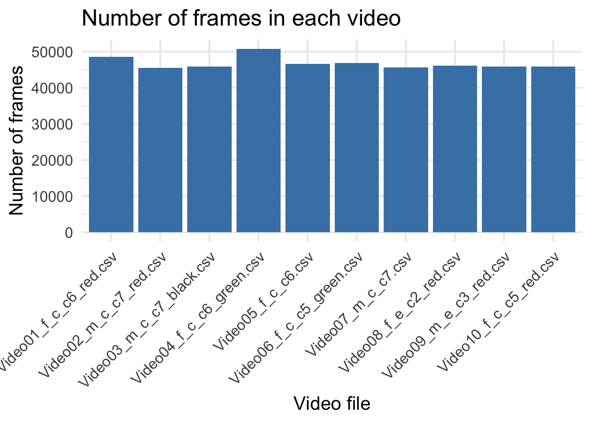
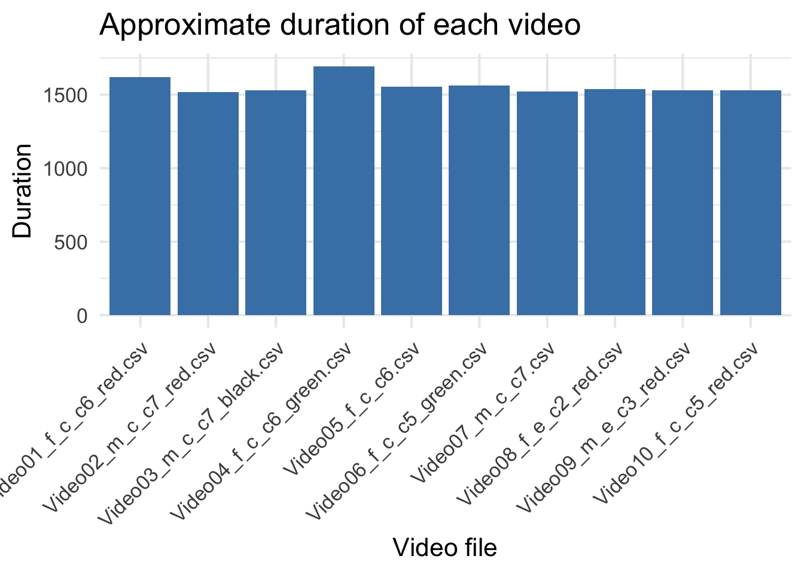
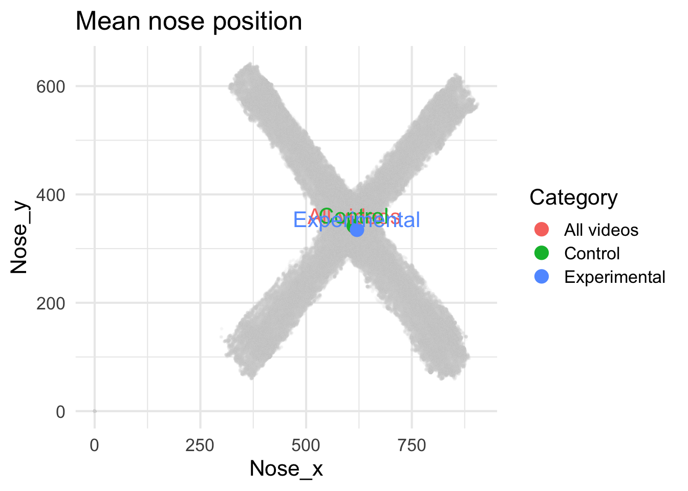
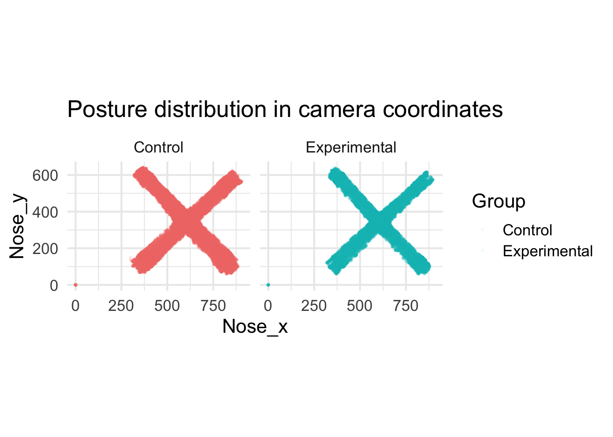
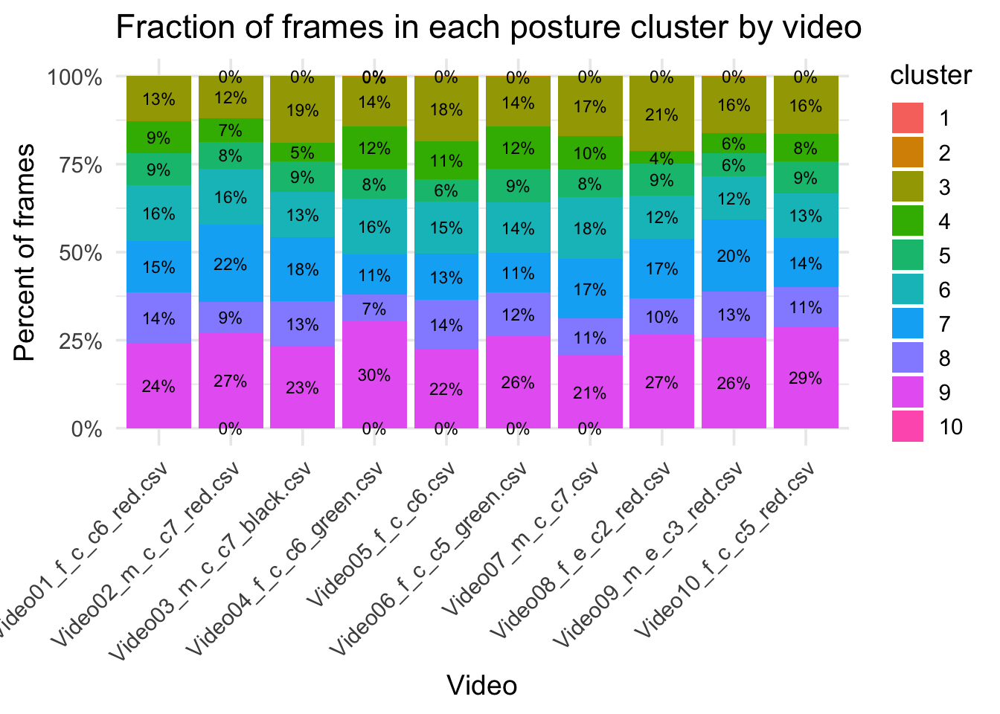
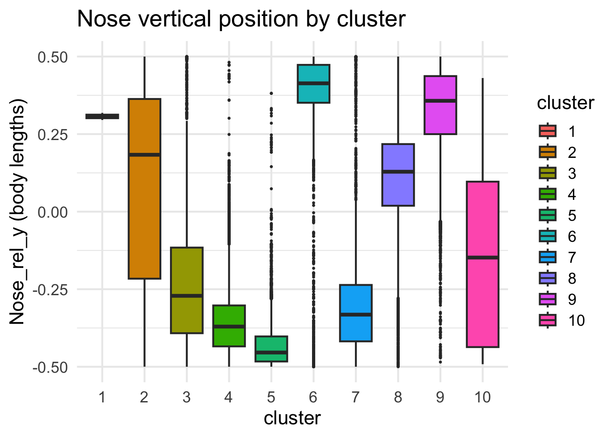
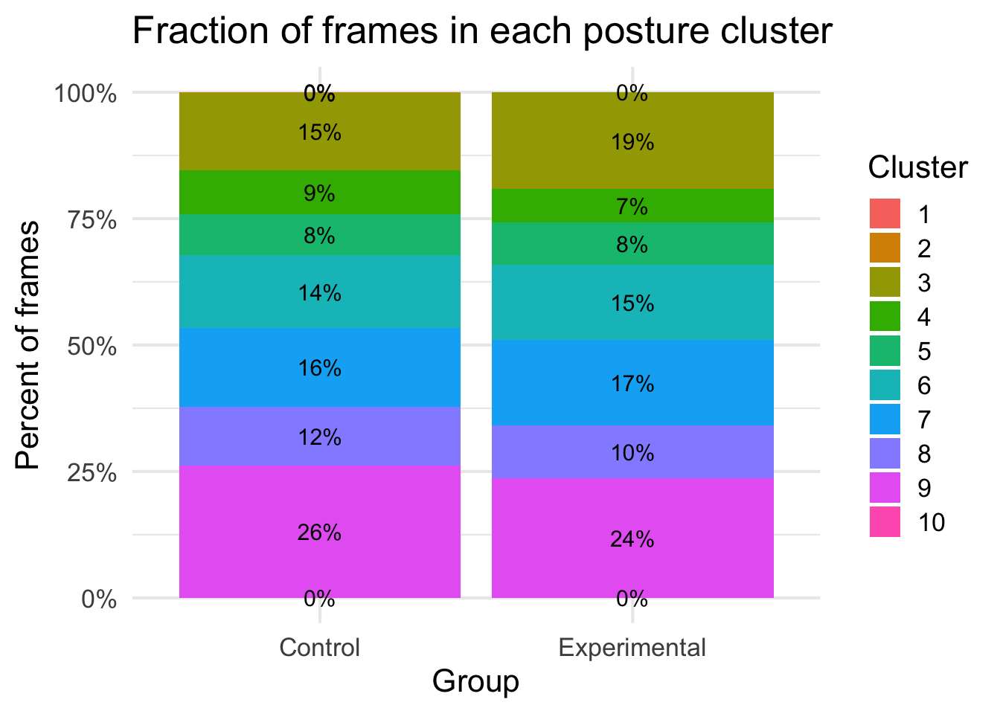
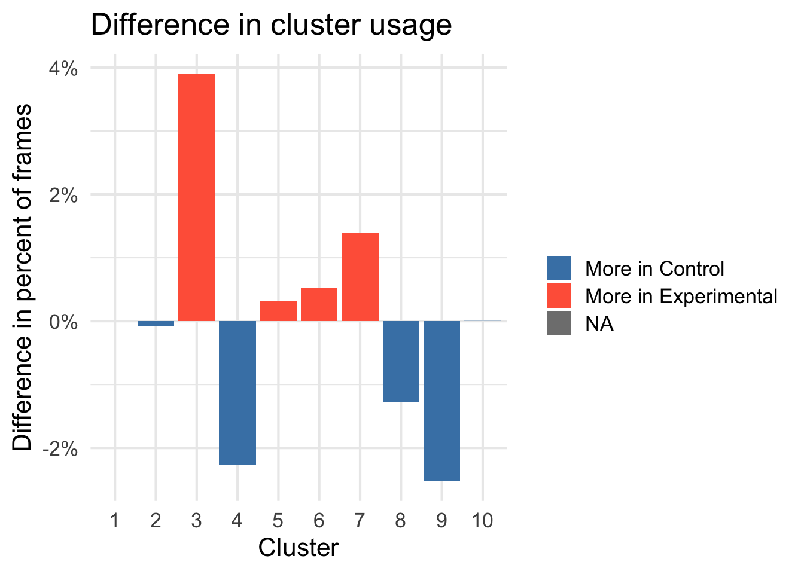
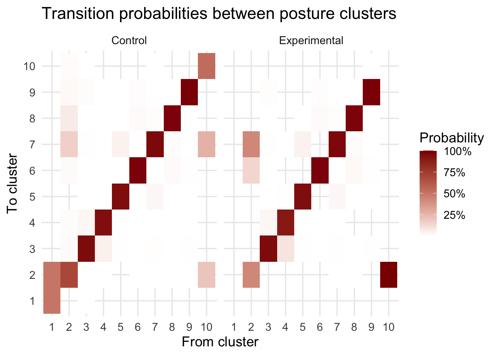
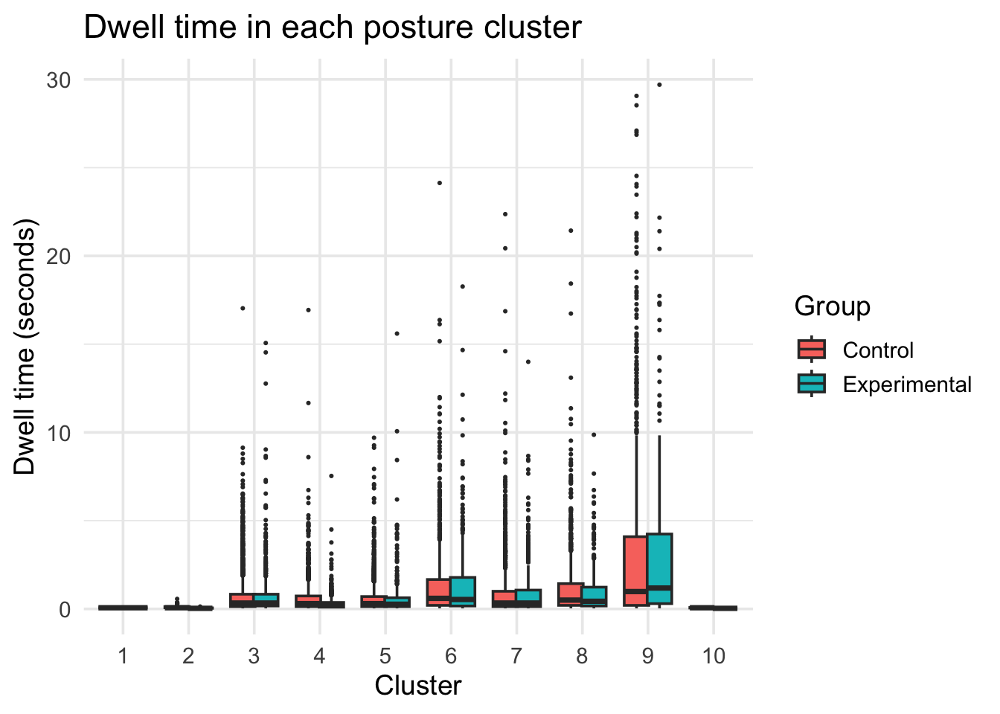

Before analyzing posture, I looked at how long each video was. All videos contained a similar number of frames, and their durations only differed by a few minutes. This means any behavioral differences are unlikely to come from recording length.
Code
ggplot(video_info, aes(x = video_id, y = n_frames)) +geom_col(fill ="steelblue") +labs(title ="Number of frames in each video",x ="Video file",y ="Number of frames" ) +theme_minimal(base_size =16) +theme(axis.text.x =element_text(angle =45, hjust =1) )

Code
ggplot(video_info, aes(x = video_id, y = duration_s)) +geom_col(fill ="steelblue") +labs(title ="Approximate duration of each video",x ="Video file",y ="Duration" ) +theme_minimal(base_size =16) +theme(axis.text.x =element_text(angle =45, hjust =1) )

Code
library(tidyverse)read_pose_dlc <-function(path) { raw <-read_csv(path, col_names =FALSE, show_col_types =FALSE) header <- raw[1:3, ] data <- raw[-(1:3), ] bodyparts <-as.character(header[2, ]) coords <-as.character(header[3, ]) col_names <-paste(bodyparts, coords, sep ="_")colnames(data) <- col_names data <- data |>mutate(across(everything(), as.numeric)) |>mutate(video_id =basename(path), .before =1) data}
Code
# Building video_info with DLC data and group labelsvideo_info <-tibble(file = csv_files,video_id =basename(csv_files)) |>mutate(data =map(file, read_pose_dlc),n_frames =map_int(data, nrow),fps =30,duration_s = n_frames / fps,# 7th and 8th videos are Experimental, others Controlgroup =if_else(row_number() %in%c(7, 8), "Experimental", "Control") ) |>arrange(video_id)video_info |>select(video_id, group, n_frames, duration_s)
# A tibble: 10 × 4
video_id group n_frames duration_s
<chr> <chr> <int> <dbl>
1 Video01_f_c_c6_red.csv Control 48639 1621.
2 Video02_m_c_c7_red.csv Control 45588 1520.
3 Video03_m_c_c7_black.csv Control 45964 1532.
4 Video04_f_c_c6_green.csv Control 50817 1694.
5 Video05_f_c_c6.csv Control 46587 1553.
6 Video06_f_c_c5_green.csv Control 46906 1564.
7 Video07_m_c_c7.csv Experimental 45682 1523.
8 Video08_f_e_c2_red.csv Experimental 46095 1536.
9 Video09_m_e_c3_red.csv Control 45941 1531.
10 Video10_f_c_c5_red.csv Control 45883 1529.
# A tibble: 3 × 3
group3 mean_x mean_y
<chr> <dbl> <dbl>
1 All videos 614. 340.
2 Control 613. 342.
3 Experimental 620. 335.
Code
ggplot() +geom_point(data = pose_all,aes(x = Nose_x, y = Nose_y),color ="grey80",alpha =0.05,size =0.3 ) +geom_point(data = mean_positions,aes(x = mean_x, y = mean_y, color = group3),size =4 ) +geom_text(data = mean_positions,aes(x = mean_x, y = mean_y, label = group3, color = group3),nudge_y =20,show.legend =FALSE ) +labs(title ="Mean nose position",x ="Nose_x",y ="Nose_y",color ="Category" ) +theme_minimal(base_size =16)

I began by comparing raw nose positions across all videos. When I plotted average nose location for: all mice combined, control mice only, and experimental mice only, all three points were almost on top of each other, near the center of the arena.
Code
ggplot(pose_all, aes(x = Nose_x, y = Nose_y)) +geom_point(aes(color = group),alpha =0.05, size =0.3) +coord_equal() +facet_wrap(~ group) +labs(title ="Posture distribution in camera coordinates",x ="Nose_x",y ="Nose_y",color ="Group" ) +theme_minimal(base_size =16)

I then compared full posture clouds (all frames), showing where each mouse’s nose appeared in camera coordinates. Both control and experimental mice formed nearly identical “X-shaped” patterns. This shape comes from the geometry of the arena and the way mice move across it. In raw camera coordinates, experimental mice do not appear to explore the arena differently than controls. This suggests we should look deeper, at body-relative posture rather than position in space.
4 Relative posture and clustering
To study posture itself, I converted body-part locations into a coordinate system relative to the mouse’s own head–body orientation. This removes the influence of where the mouse is in the arena and focuses on the shape and angles of the body. I then ran PCA for visualization and applied k-means clustering to group similar postures.
The PCA scatterplot shows that some clusters are tight and well-separated, while others are more spread out. This means: certain postures are very consistent, other postures act more like transitions between main states. The PCA plot also confirms that relative posture reveals structure that is completely invisible in raw camera coordinates.
Code
cluster_fraction <- pose_rel |>group_by(video_id, cluster) |>summarise(n =n()) |>group_by(video_id) |>mutate(p = n /sum(n))ggplot(cluster_fraction,aes(x = video_id, y = p, fill = cluster)) +geom_col() +geom_text(aes(label = scales::percent(p, accuracy =1)),position =position_stack(vjust =0.5), size =3) +scale_y_continuous(labels = scales::percent) +labs(title ="Fraction of frames in each posture cluster by video",x ="Video", y ="Percent of frames") +theme_minimal(base_size =14) +theme(axis.text.x =element_text(angle =45, hjust =1))

The stacked bar charts show that:all videos contain all posture clusters, but the proportion of each cluster varies somewhat from mouse to mouse. Importantly, the experimental mice do not show any cluster that is completely absent in controls. Instead, they may differ in how much time they spend in certain states.
Code
ggplot(pose_rel, aes(x = cluster, y = nose_rel_y, fill = cluster)) +geom_boxplot(outlier.size =0.5) +labs(title ="Nose vertical position by cluster",y ="Nose_rel_y (body lengths)") +theme_minimal(base_size =16)

To better understand the meaning of each cluster, I plotted the relative vertical nose position for every cluster. Clusters clearly separate into:head-up postures (higher nose values), head-down postures (lower nose values), and mid-level postures. This interpretation is helpful because it translates the clusters into something biologically meaningful.
Visualizing the cluster sequence over time shows that mice switch posture very frequently. This is expected for freely moving animals exploring a new environment.
Code
library(dplyr)library(ggplot2)library(scales)# Fraction of frames in each cluster, by groupcluster_fraction_group <- pose_rel |>group_by(group, cluster) |>summarise(n =n(), .groups ="drop_last") |>mutate(p = n /sum(n)) |>ungroup()cluster_fraction_group
# A tibble: 19 × 4
group cluster n p
<chr> <fct> <int> <dbl>
1 Control 1 2 0.00000532
2 Control 2 326 0.000868
3 Control 3 57458 0.153
4 Control 4 33078 0.0881
5 Control 5 30408 0.0809
6 Control 6 53960 0.144
7 Control 7 58271 0.155
8 Control 8 44066 0.117
9 Control 9 98078 0.261
10 Control 10 15 0.0000399
11 Experimental 2 7 0.0000763
12 Experimental 3 17600 0.192
13 Experimental 4 5992 0.0653
14 Experimental 5 7717 0.0841
15 Experimental 6 13655 0.149
16 Experimental 7 15505 0.169
17 Experimental 8 9594 0.105
18 Experimental 9 21636 0.236
19 Experimental 10 1 0.0000109
Code
ggplot(cluster_fraction_group,aes(x = group, y = p, fill = cluster)) +geom_col() +geom_text(aes(label =percent(p, accuracy =1)),position =position_stack(vjust =0.5),size =4) +scale_y_continuous(labels =percent_format()) +labs(title ="Fraction of frames in each posture cluster",x ="Group",y ="Percent of frames",fill ="Cluster" ) +theme_minimal(base_size =16)

This plot summarizes how often each posture cluster appears in the two groups. Noticeable differences appear in several clusters: Cluster 3 and 7 occur slightly more often in the Experimental group.Cluster 4 and 9 occur more often in Control mice. These small but consistent shifts suggest that stressed mice may bias toward certain posture states.
Code
cluster_diff <- cluster_fraction_group |>select(group, cluster, p) |> tidyr::pivot_wider(names_from = group, values_from = p) |>mutate(diff_exp_minus_ctrl = Experimental - Control)ggplot(cluster_diff,aes(x = cluster, y = diff_exp_minus_ctrl, fill = diff_exp_minus_ctrl >0)) +geom_col() +scale_y_continuous(labels =percent_format(accuracy =1)) +scale_fill_manual(values =c("TRUE"="tomato", "FALSE"="steelblue"),labels =c("FALSE"="More in Control","TRUE"="More in Experimental"),name ="") +labs(title ="Difference in cluster usage",x ="Cluster",y ="Difference in percent of frames" ) +theme_minimal(base_size =16)

This graph makes the group differences easier to interpret by showing the percent-difference directly.
Code
library(dplyr)library(tidyr)# All successive transitions within each videotransitions <- pose_rel |>arrange(video_id, frame) |>group_by(video_id) |>mutate(cluster_next = dplyr::lead(cluster)) |>ungroup() |>filter(!is.na(cluster_next))# Count transitions by grouptrans_mat_group <- transitions |>group_by(group, cluster, cluster_next) |>summarise(n =n(), .groups ="drop_last") |>mutate(p = n /sum(n)) |>ungroup()# Heatmap for each groupggplot(trans_mat_group,aes(x = cluster, y = cluster_next, fill = p)) +geom_tile() +facet_wrap(~ group) +scale_fill_gradient(low ="white", high ="darkred",labels =percent_format(accuracy =1)) +labs(title ="Transition probabilities between posture clusters",x ="From cluster",y ="To cluster",fill ="Probability" ) +theme_minimal(base_size =14)

When I looked at how mice move from one posture cluster to another, both groups mostly stayed in the same posture from frame to frame, which is expected. But I did notice one small difference: the Experimental mice shifted into cluster 3 a bit more often, while the Control mice tended to move into clusters 4 and 9 more frequently. So even though the overall transition patterns look similar, the stressed mice seem to favor slightly different movement patterns.
Code
rle_dwell <- pose_rel |>arrange(video_id, frame) |>group_by(video_id) |>do({ cl <- .$cluster gr <- .$group[1] r <-rle(as.character(cl))tibble(group = gr,cluster =factor(r$values, levels =levels(.$cluster)),dwell_len = r$lengths /30 ) }) |>ungroup()ggplot(rle_dwell,aes(x = cluster, y = dwell_len, fill = group)) +geom_boxplot(outlier.size =0.4, position =position_dodge(width =0.7)) +labs(title ="Dwell time in each posture cluster",x ="Cluster",y ="Dwell time (seconds)",fill ="Group" ) +theme_minimal(base_size =14)

I also checked how long mice stay in each posture before switching. Most postures were held only briefly, but the Experimental mice tended to remain in clusters 3 and 7 a bit longer, and spent less time in clusters that look more like typical locomotion. This again hints that stress may change how mice behave moment-to-moment.